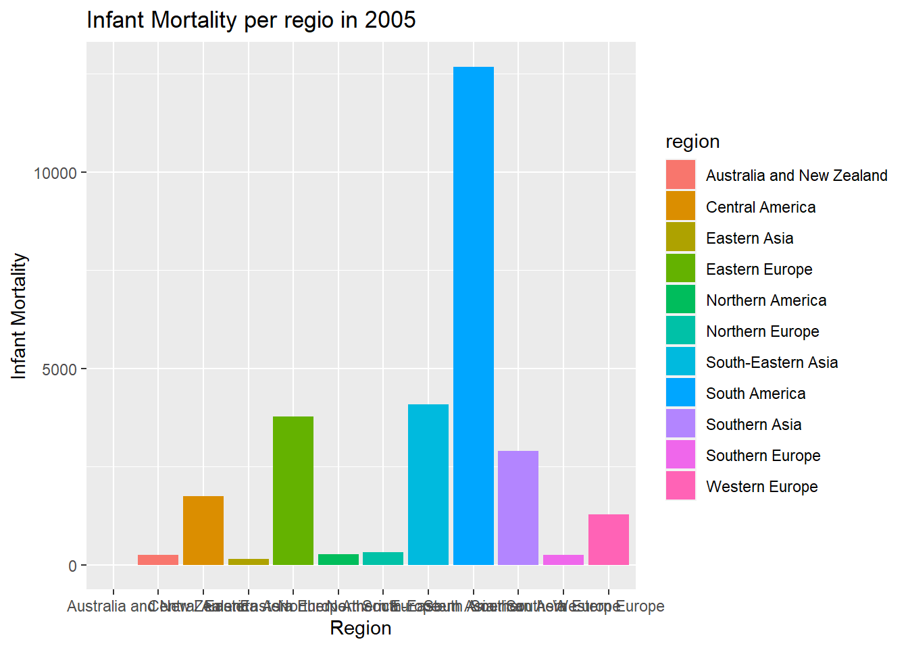
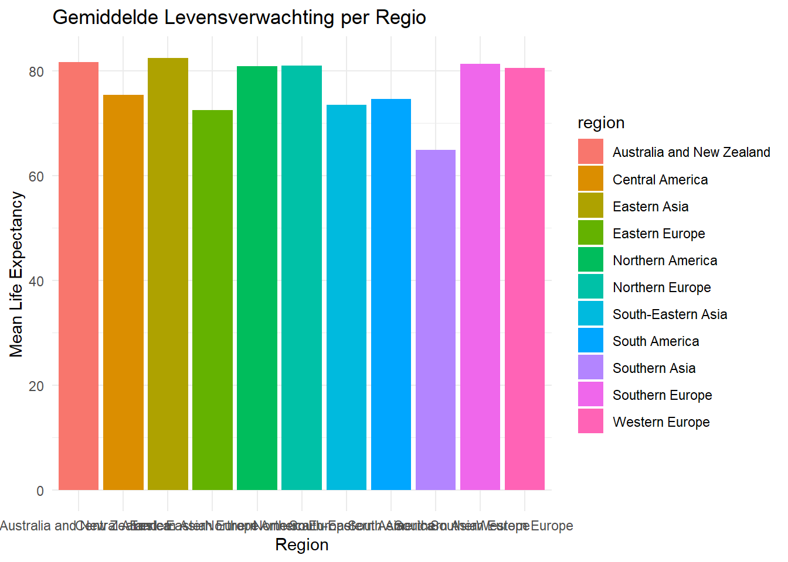

Opdracht 7: Relationele data en databases
In deze opdracht is er gewerkt met SQL. Er waren verschillende datasets beschikbaar die bewerkt moesten worden met SQL, ik heb dit gedaan aan de hand van dbeaver. DBeaver is een databaseclient voor het beheren en queryen van databases.De datasets moesten worden opgechoond en opgeslagen als csv en rds bestanden. tot slot moest er bij de opdracht een kort verslag geschreven worden, die zal beginnen vanaf het kopje “inleiding” als je verder leest.
Inleiding
In dit verslag wordt een samenvatting gegeven van een data-analyse en visualisatie opdracht. deze opdracht is uitgevoerd met behulp van R (in rStudio) en PostgreSQl (in dbeaver). in deze opdracht werden er verschillende datasets verkend, opgeschoond en geanalyseert. De datasetst hadden gegevens met betrekking tot griep, dengue en demografische indicatoren van verschillende landen en jaren.
Data laden en opschonen
Voor deze opdracht zijn er verschillende datasets geladen; “flu_data.csv”, “dengue_data.csv” en “gapminder” uit het {dslabs} pakket. Deze datasets zijn in losse dataframes geladen en tidy gemaakt.
# inlezen van de flu data
flu_data <- read.csv("~/HU_ILC_DS2/Datascience2_portfolio/data/flu_data_portfolio_opdracht_7.csv")
# tidy maken van de flu data
flu_data_tidy <- flu_data %>%
pivot_longer(cols = c("Argentina", "Australia", "Austria", "Belgium", "Bolivia", "Brazil", "Bulgaria", "Canada", "Chile", "France", "Germany", "Hungary", "Japan", "Mexico", "Netherlands", "New.Zealand", "Norway", "Paraguay", "Peru", "Poland", "Romania", "Russia", "South.Africa", "Spain", "Sweden", "Switzerland", "Ukraine", "United.States", "Uruguay"),
names_to = "country",
values_to = "value")
# maak er een dataframe van
flu_data_tidy_df <- as.data.frame(flu_data_tidy)
# inlezen van de dengue data
dengue_data <- read.csv("~/HU_ILC_DS2/Datascience2_portfolio/data/dengue_data_portfolio_opdracht_7.csv")
# tidy maken can de dengue data
dengue_data_tidy <- dengue_data %>%
pivot_longer(cols = c("Argentina", "Bolivia", "Brazil", "India", "Indonesia", "Mexico", "Philippines", "Singapore", "Thailand", "Venezuela"),
names_to = "country",
values_to = "value")
# maak er een dataframe van
dengue_data_tidy_df <- as.data.frame(dengue_data_tidy)
# inlezen van de gapminder data
gapminder_data <- dslabs::gapminder
# maak er een dataframe van
gapminder_data_df <- as.data.frame(gapminder_data)Vervolgens zijn de klassen gecontrolleerd op dat ze wel echt dataframes zijn aan de hand van de volgende code.
# onderzoeken wat de classes zijn
class(flu_data_tidy_df)## [1] "data.frame"class(dengue_data_tidy_df)## [1] "data.frame"class(gapminder_data_df)## [1] "data.frame"Hieruit is geconcludeerd dat alle klassen overeen komen met elkaar, vervolgens is er onderzocht of de gegevenstypen ook overeen komen met elkaar, om zo nodig aan te kunnen passen.
#uitzoeken of de gegevenstypen over een komen
str(flu_data_tidy_df[c("country", "Date")])## 'data.frame': 19111 obs. of 2 variables:
## $ country: chr "Argentina" "Australia" "Austria" "Belgium" ...
## $ Date : chr "2002-12-29" "2002-12-29" "2002-12-29" "2002-12-29" ...str(dengue_data_tidy_df[c("country", "Date")])## 'data.frame': 6590 obs. of 2 variables:
## $ country: chr "Argentina" "Bolivia" "Brazil" "India" ...
## $ Date : chr "2002-12-29" "2002-12-29" "2002-12-29" "2002-12-29" ...De gegevenstypen komen overeen, maar in de gapminder data is de “Date” geen datum, maar alleen een jaar in de kolom “Year”. om dit op te lossen wordt er aan de flu en dengue data een extra kolom met “year” toegevoegd.
flu_data_tidy_df_2 <- flu_data_tidy_df %>%
mutate(year = year(ymd(Date)))
dengue_data_tidy_df_2 <- dengue_data_tidy_df %>%
mutate(year = year(ymd(Date)))
# nogmaals checken of de gegevenstypen overeen komen
str(flu_data_tidy_df_2[c("country", "year")])## 'data.frame': 19111 obs. of 2 variables:
## $ country: chr "Argentina" "Australia" "Austria" "Belgium" ...
## $ year : num 2002 2002 2002 2002 2002 ...str(dengue_data_tidy_df_2[c("country", "year")])## 'data.frame': 6590 obs. of 2 variables:
## $ country: chr "Argentina" "Bolivia" "Brazil" "India" ...
## $ year : num 2002 2002 2002 2002 2002 ...str(gapminder_data_df[c("country", "year")])## 'data.frame': 10545 obs. of 2 variables:
## $ country: Factor w/ 185 levels "Albania","Algeria",..: 1 2 3 4 5 6 7 8 9 10 ...
## $ year : int 1960 1960 1960 1960 1960 1960 1960 1960 1960 1960 ...Hieruit blijkt dat de gegevenstypen niet overeen komen. De kolommen “country” en “year”zijn in de gapminder dataframe van de gegevenstypes “Factor with leves” en “integer”, deze zijn in de flue en dengue data van de gegevenstypes “character” en “number”. dit is opgelost aan de hand van de onderstaande code.
# gegevenstypen aanpassen
flu_data_tidy_df_2$country <- as.factor(flu_data_tidy_df_2$country)
flu_data_tidy_df_2$year <- as.integer(flu_data_tidy_df_2$year)
dengue_data_tidy_df_2$country <- as.factor(dengue_data_tidy_df_2$country)
dengue_data_tidy_df_2$year <- as.integer(dengue_data_tidy_df_2$year)
# nogmaals gegevenstypen nakijken
str(flu_data_tidy_df_2[c("country", "year")])## 'data.frame': 19111 obs. of 2 variables:
## $ country: Factor w/ 29 levels "Argentina","Australia",..: 1 2 3 4 5 6 7 8 9 10 ...
## $ year : int 2002 2002 2002 2002 2002 2002 2002 2002 2002 2002 ...str(dengue_data_tidy_df_2[c("country", "year")])## 'data.frame': 6590 obs. of 2 variables:
## $ country: Factor w/ 10 levels "Argentina","Bolivia",..: 1 2 3 4 5 6 7 8 9 10 ...
## $ year : int 2002 2002 2002 2002 2002 2002 2002 2002 2002 2002 ...str(gapminder_data_df[c("country", "year")])## 'data.frame': 10545 obs. of 2 variables:
## $ country: Factor w/ 185 levels "Albania","Algeria",..: 1 2 3 4 5 6 7 8 9 10 ...
## $ year : int 1960 1960 1960 1960 1960 1960 1960 1960 1960 1960 ...Nu de gegevenstypen overeen komen kunnen de dataframes opgeslagen worden als .csv en .rds bestanden. deze worden opgeslagen naar de map “data”
# pad naar de map toevoegen (om typfouten te voorkomen)
mapnaam <- "~/HU_ILC_DS2/Datascience2_portfolio/data/"
# dataframes opslaan als .csv
write.csv(flu_data_tidy_df_2, file = paste0(mapnaam, "flu_data_tidy.csv"))
write.csv(dengue_data_tidy_df_2, file = paste0(mapnaam, "dengue_data_tidy.csv"))
write.csv(gapminder_data_df, file = paste0(mapnaam, "gapminder_data_tidy.csv"))
# dataframes opslaan als .rds
saveRDS(flu_data_tidy_df_2, file = paste0(mapnaam, "flu_data_tidy.rds"))
saveRDS(dengue_data_tidy_df_2, file = paste0(mapnaam, "dengue_data_tidy.rds"))
saveRDS(gapminder_data_df, file = paste0(mapnaam, "gapminder_data_tidy.rds"))Database creatie en gegevens importeren
Om de verkregen gegevens in te kunnen laden naar een database moet de PostgreSQL database eerst gemaakt worden, dit is gedaan aan de hand van dbeaver. de gemaak
nadat de database genaamd “workflowsdb aangemaakt is moest er een connectie aangemaakt worden.
#verbinding maken met database
con <- dbConnect(RPostgres::Postgres(),
host = "localhost",
port = 5432,
dbname = "workflowsdb",
user = "postgres",
password = "Muis1234")Nu de connectie bestaat kunnen de tabellen ingevoegd worden in de database.
#tabellen maken en invoegen CSV
dbWriteTable(con, "flu_data_csv", read.csv("~/HU_ILC_DS2/Datascience2_portfolio/data/flu_data_tidy.csv"), overwrite = TRUE)
dbWriteTable(con, "dengue_data_csv", read.csv("~/HU_ILC_DS2/Datascience2_portfolio/data/dengue_data_tidy.csv"), overwrite = TRUE)
dbWriteTable(con, "gapminder_data_csv", read.csv("~/HU_ILC_DS2/Datascience2_portfolio/data/gapminder_data_tidy.csv"), overwrite = TRUE)
#tabellen maken en invoegen RDS
dbWriteTable(con, "flu_data_rds", readRDS("~/HU_ILC_DS2/Datascience2_portfolio/data/flu_data_tidy.rds"), overwrite = TRUE)
dbWriteTable(con, "dengue_data_rds", readRDS("~/HU_ILC_DS2/Datascience2_portfolio/data/dengue_data_tidy.rds"), overwrite = TRUE)
dbWriteTable(con, "gapminder_data_rds", readRDS("~/HU_ILC_DS2/Datascience2_portfolio/data/gapminder_data_tidy.rds"), overwrite = TRUE)De tabellen zijn nu ingeladen in dbever. De volgende stap is om de inhoud van de tabellen in dbever te inspecteren aan de hand van SQL. De code in de chunk hieronder is niet gerund, deze is in dbeaver gerund. het gevormde sql file is te vinden in mijn Github repository met als bestandsnaam “data_inspecteren.sql”.
-- Inspecteer de inhoud van de flu_data_csv-tabel
SELECT * FROM flu_data_csv;
-- Inspecteer de inhoud van de dengue_data_csv-tabel
SELECT * FROM dengue_data_csv;
-- Inspecteer de inhoud van de gapminder_data_csv-tabel
SELECT * FROM gapminder_data_csv;
-- Inspecteer de inhoud van de flu_data_rds-tabel
SELECT * FROM flu_data_rds;
-- Inspecteer de inhoud van de dengue_data_rds-tabel
SELECT * FROM dengue_data_rds;
-- Inspecteer de inhoud van de gapminder_data_rds-tabel
SELECT * FROM gapminder_data_rds;De tabellen zin ook geïnspecteerd met R aan de hand van dplyr.
# inlezen van de data
flu_data_csv <-read.csv("~/HU_ILC_DS2/Datascience2_portfolio/data/flu_data_tidy.csv")
dengue_data_csv <- read.csv("~/HU_ILC_DS2/Datascience2_portfolio/data/dengue_data_tidy.csv")
gapminder_data_csv <- read.csv("~/HU_ILC_DS2/Datascience2_portfolio/data/gapminder_data_tidy.csv")
flu_data_rds <- readRDS("~/HU_ILC_DS2/Datascience2_portfolio/data/flu_data_tidy.rds")
dengue_data_rds <- readRDS("~/HU_ILC_DS2/Datascience2_portfolio/data/dengue_data_tidy.rds")
gapminder_data_rds <- readRDS("~/HU_ILC_DS2/Datascience2_portfolio/data/gapminder_data_tidy.rds")
# inspecteer de inhoud van de tabellen
head(flu_data_csv)## X Date country value year
## 1 1 2002-12-29 Argentina NA 2002
## 2 2 2002-12-29 Australia NA 2002
## 3 3 2002-12-29 Austria NA 2002
## 4 4 2002-12-29 Belgium NA 2002
## 5 5 2002-12-29 Bolivia NA 2002
## 6 6 2002-12-29 Brazil 174 2002head(dengue_data_csv)## X Date country value year
## 1 1 2002-12-29 Argentina NA 2002
## 2 2 2002-12-29 Bolivia 0.101 2002
## 3 3 2002-12-29 Brazil 0.073 2002
## 4 4 2002-12-29 India 0.062 2002
## 5 5 2002-12-29 Indonesia 0.101 2002
## 6 6 2002-12-29 Mexico NA 2002head(gapminder_data_csv)## X country year infant_mortality life_expectancy fertility
## 1 1 Albania 1960 115.40 62.87 6.19
## 2 2 Algeria 1960 148.20 47.50 7.65
## 3 3 Angola 1960 208.00 35.98 7.32
## 4 4 Antigua and Barbuda 1960 NA 62.97 4.43
## 5 5 Argentina 1960 59.87 65.39 3.11
## 6 6 Armenia 1960 NA 66.86 4.55
## population gdp continent region
## 1 1636054 NA Europe Southern Europe
## 2 11124892 13828152297 Africa Northern Africa
## 3 5270844 NA Africa Middle Africa
## 4 54681 NA Americas Caribbean
## 5 20619075 108322326649 Americas South America
## 6 1867396 NA Asia Western Asiahead(flu_data_rds)## Date country value year
## 1 2002-12-29 Argentina NA 2002
## 2 2002-12-29 Australia NA 2002
## 3 2002-12-29 Austria NA 2002
## 4 2002-12-29 Belgium NA 2002
## 5 2002-12-29 Bolivia NA 2002
## 6 2002-12-29 Brazil 174 2002head(dengue_data_rds)## Date country value year
## 1 2002-12-29 Argentina NA 2002
## 2 2002-12-29 Bolivia 0.101 2002
## 3 2002-12-29 Brazil 0.073 2002
## 4 2002-12-29 India 0.062 2002
## 5 2002-12-29 Indonesia 0.101 2002
## 6 2002-12-29 Mexico NA 2002head(gapminder_data_rds)## country year infant_mortality life_expectancy fertility
## 1 Albania 1960 115.40 62.87 6.19
## 2 Algeria 1960 148.20 47.50 7.65
## 3 Angola 1960 208.00 35.98 7.32
## 4 Antigua and Barbuda 1960 NA 62.97 4.43
## 5 Argentina 1960 59.87 65.39 3.11
## 6 Armenia 1960 NA 66.86 4.55
## population gdp continent region
## 1 1636054 NA Europe Southern Europe
## 2 11124892 13828152297 Africa Northern Africa
## 3 5270844 NA Africa Middle Africa
## 4 54681 NA Americas Caribbean
## 5 20619075 108322326649 Americas South America
## 6 1867396 NA Asia Western AsiaNadat de gegevens geïnspecteerd zijn moeten de gegevens van de gapminder toegevoegd worden aan de dengue en flu.
# Samenvoegen van gapminder_data_df met flu_data_tidy_df_2 op basis van country en year
merged_flu <- left_join(flu_data_tidy_df_2, gapminder_data_df, by = c("country", "year"))
# Samenvoegen van gapminder_data_df met dengue_data_tidy_df_2 op basis van country en year
merged_dengue <- left_join(dengue_data_tidy_df_2, gapminder_data_df, by = c("country", "year"))Deze schone gegevens moeten vervolgens bewaard worden in de workflowsdb database.
# dataframes opslaan als .csv
write.csv(merged_flu, file = paste0(mapnaam, "merged_flu.csv"))
write.csv(merged_dengue, file = paste0(mapnaam, "merged_dengue.csv"))
# dataframes opslaan als .rds
saveRDS(merged_flu, file = paste0(mapnaam, "merged_flu.rds"))
saveRDS(merged_dengue, file = paste0(mapnaam, "merged_dengue.rds"))
#tabellen maken en invoegen CSV
dbWriteTable(con, "merged_flu_csv", read.csv("~/HU_ILC_DS2/Datascience2_portfolio/data/merged_flu.csv"), overwrite = TRUE)
dbWriteTable(con, "merged_dengue_csv", read.csv("~/HU_ILC_DS2/Datascience2_portfolio/data/merged_dengue.csv"), overwrite = TRUE)
#tabellen maken en invoegen RDS
dbWriteTable(con, "merged_flu_rds", read.csv("~/HU_ILC_DS2/Datascience2_portfolio/data/merged_flu.rds"), overwrite = TRUE)
dbWriteTable(con, "merged_dengue_rds", read.csv("~/HU_ILC_DS2/Datascience2_portfolio/data/merged_dengue.rds"), overwrite = TRUE)Aan de hand van de schone gegevens is een merged tabel gemaakt aan de hand van de volgende code. De code in de chunk hieronder is niet gerund, deze is in dbeaver gerund. het gevormde sql file is te vinden in mijn Github repository met als bestandsnaam; “merge_data.sql”.
--- Merge rds data
SELECT *
INTO merged_rds
FROM merged_flu_rds
UNION ALL
SELECT *
FROM merged_dengue_rds;
--- Merge csv data
SELECT *
INTO merged_csv
FROM merged_flu_csv
UNION ALL
SELECT *
FROM merged_dengue_csv;Deze data is gëexporteerd naar de “data” map en heet “merged_csv_202306051720.csv” deze kan nu worden ingelezen in R om statistische tests mee te doen.
Beschrijvende statistieken en visualisaties
Mer de gekoppelde tabel kunnen er verschillende beschrijvende statistieken weergeven worden om inzicht te krijgen in de gegevens. dit is als volgt gedaan.
# inlezen van de data
merged_data <- read.csv("~/HU_ILC_DS2/Datascience2_portfolio/data/merged_csv_202306051720.csv")
# toon beschrijvende statistieken
summary(merged_data)## X Date country value
## Min. : 1 Length:25701 Length:25701 Min. : 0.000
## 1st Qu.: 3213 Class :character Class :character 1st Qu.: 0.361
## Median : 6426 Mode :character Mode :character Median : 63.000
## Mean : 7951 Mean : 347.673
## 3rd Qu.:12686 3rd Qu.: 373.000
## Max. :19111 Max. :10555.000
## NA's :2172
## year infant_mortality life_expectancy fertility
## Min. :2002 Min. : 2.00 Min. :62.30 Min. :1.150
## 1st Qu.:2006 1st Qu.: 4.00 1st Qu.:73.20 1st Qu.:1.440
## Median :2009 Median :10.90 Median :75.60 Median :1.850
## Mean :2009 Mean :12.92 Mean :76.06 Mean :1.981
## 3rd Qu.:2012 3rd Qu.:16.20 3rd Qu.:80.40 3rd Qu.:2.310
## Max. :2015 Max. :62.00 Max. :83.20 Max. :3.980
## NA's :1977 NA's :1977 NA's :1977
## population gdp continent region
## Min. :3.324e+06 Min. :7.214e+09 Length:25701 Length:25701
## 1st Qu.:9.759e+06 1st Qu.:8.755e+10 Class :character Class :character
## Median :3.138e+07 Median :2.534e+11 Mode :character Mode :character
## Mean :8.652e+07 Mean :5.144e+11
## 3rd Qu.:8.160e+07 3rd Qu.:6.371e+11
## Max. :1.311e+09 Max. :5.218e+12
## NA's :1977 NA's :8781Daarnaast zijn er verschillende visualisaties gedaan, er is een bar plot gemaakt over infant mortality in de verschillende regios in 2005, er is een scatter/line plot gemaakt over de gemiddelde infant mortality per jaar per regio en er is een bar plot gemaakt bij de gemiddelde levensverwachting per regio. de resultaten hiervan zijn hieronder terug te zien.
# infant mortality geplot tegen de regio in het jaar 2005
filtered_data <- subset(merged_data, year == 2005)
ggplot(data = filtered_data, aes(x = region, y = infant_mortality, fill = region)) +
geom_bar(stat = "identity") +
xlab("Region") +
ylab("Infant Mortality") +
ggtitle("Infant Mortality per regio in 2005")
# infant mortality per regio
# Groepeer de dataset op jaar en regio en bereken het gemiddelde van infant mortality
average_infant_mortality <- merged_data %>%
group_by(year, region) %>%
summarise(mean_infant_mortality = mean(infant_mortality))
# Plot de gemiddelde infant mortality per jaar per regio
ggplot(data = average_infant_mortality, aes(x = year, y = mean_infant_mortality, color = region)) +
geom_point() +
geom_line() +
labs(title = "Gemiddelde Infant Mortality per jaar per regio",
x = "Year",
y = "Gemiddelde Infant Mortality") +
theme_minimal()
# bereken het gemiddelde van life_expectancy per region
mean_life_expectancy <- aggregate(life_expectancy ~ region, data = merged_data, FUN = mean)
# maak barplot
ggplot(data = mean_life_expectancy, aes(x = region, y = life_expectancy, fill = region)) +
geom_bar(stat = "identity") +
labs(x = "Region", y = "Mean Life Expectancy") +
ggtitle("Gemiddelde Levensverwachting per Regio") +
theme_minimal()
Conclusie
Deze opdracht weergeeft mijn vaardigheden op het gebied van gegevensanalyse en visualisatie met behulp van R en SQL. Ik heb ervaring opgedaan met het opschonen en combineren van gegevens, het uitvoeren van analyses met SQL en dplyr, en het creëren van informatieve visualisaties.